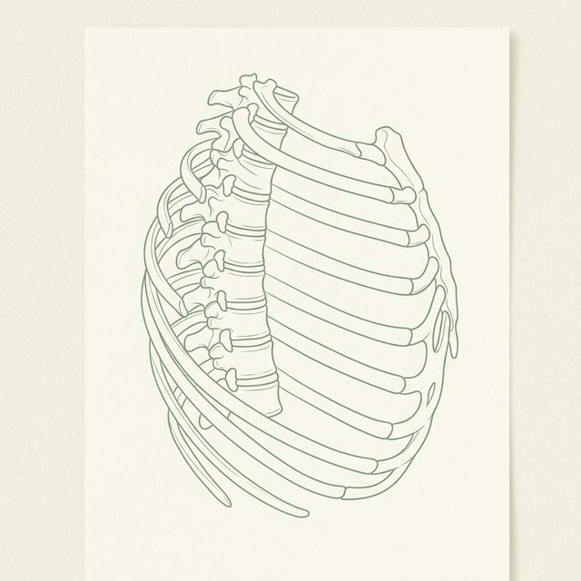
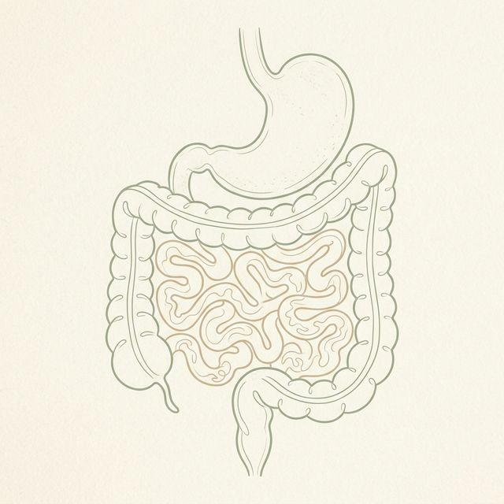
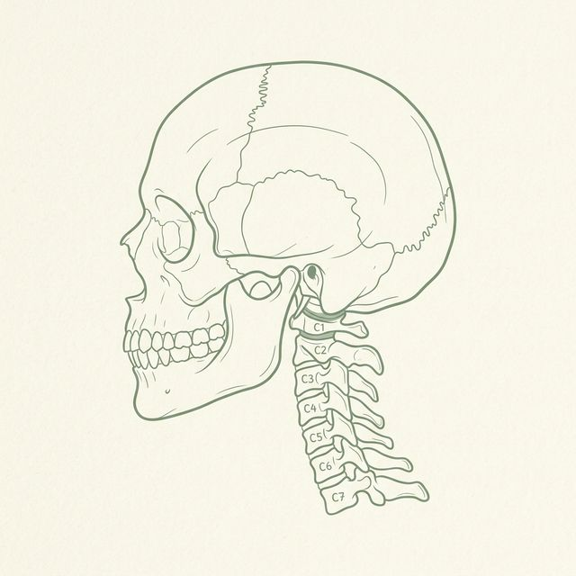

Vom Symptom zur Ursache.
In 4 Phasen zur Einheit.
Wir begleiten Sie auf dem Weg zur harmonischen Balance – durch ein tiefes Verständnis der Zusammenhänge Ihres Körpers.
Die Dreiklang-Resonanz
Gesundheit ist ein ineinandergreifendes Ökosystem. Wir betrachten die drei Säulen Ihres Körpers nicht getrennt, sondern als harmonische Einheit.
Parietale Osteopathie
Der Fokus: Das Gerüst Ihres Lebens. Wir betrachten nicht nur den Schmerz im Rücken, sondern das Zusammenspiel von Knochen, Gelenken und Faszien.
Viszerale Osteopathie
Der Fokus: Der stille Rhythmus Ihrer Organe. Die Beweglichkeit von Magen, Leber und Darm ist untrennbar mit Ihrer Wirbelsäule verbunden.
Craniosacrale Osteopathie
Der Fokus: Der Puls Ihres Nervensystems. Vom Schädel bis zum Kreuzbein fließt die Lebensenergie, die Ihre Selbstheilungskräfte steuert.
"Gesundheit ist kein statischer Zustand, sondern ein dynamisches Gleichgewicht. In meiner Praxis führen wir diese drei Wege zusammen, um Ihre individuelle Harmonie wiederherzustellen."
Der fließende Einblick
Wir ersetzen starre Fragen durch lebendige Statements. Entdecken Sie die Architektur Ihrer Genesung.

Das Handwerk der Stille
Keine Geräte. Nur das Gespür für Ihre Gewebespannung. Wir hören dort hin, wo Worte aufhören, und finden durch präzise manuelle Impulse den Weg zurück in Ihre Mobilität.
Die Methode entdecken
Das Signal verstehen
Ihr Körper flüstert, bevor er schreit. Von akuten Blockaden bis hin zu chronischer Erschöpfung – wir finden den richtigen Zeitpunkt für Ihren Reset.
Symptom-Check
Die System-Architektur
Ein Netzwerk aus Fasern, Flüssigkeit und Energie. Wir therapieren nicht das Symptom, wir kalibrieren das gesamte System neu – für eine Harmonie, die bleibt.
Das Ganze sehen